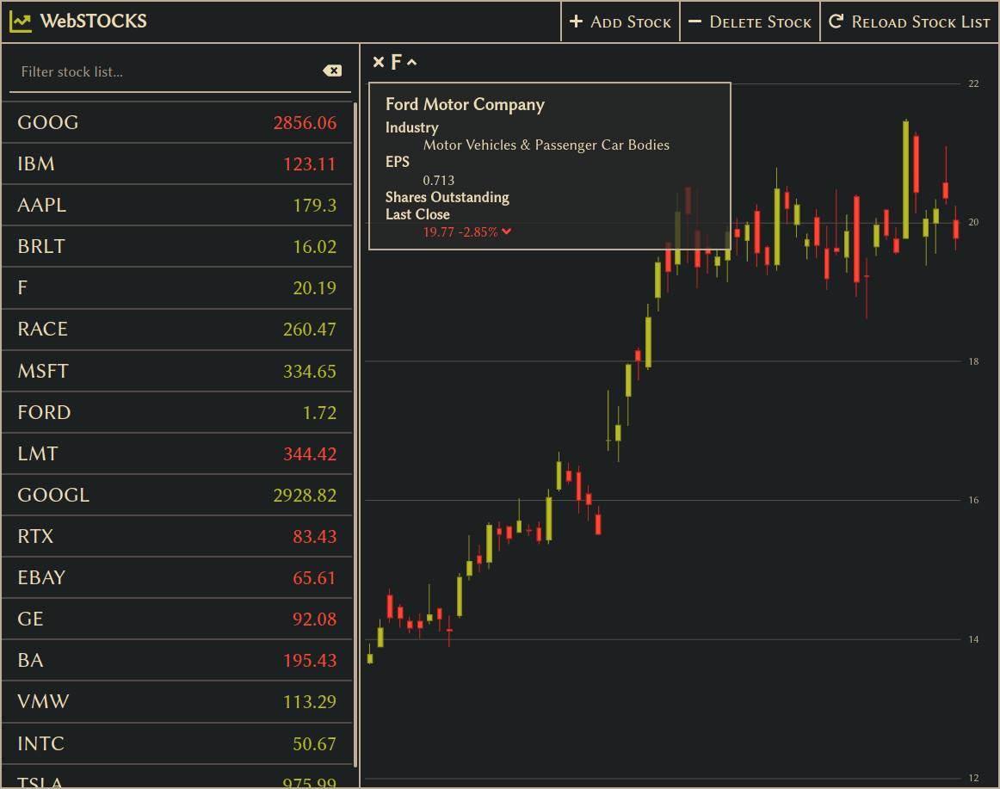

The Façade
It seems fitting to begin this discussion of software architecture with an anecdote about the practice that gives it its name. In Architecture, a façade is an exterior plane of a structure that is visible to the public. When used with the definite article (i.e. the façade), however, it conventionally refers to the principal face, along the path of most common approach. This principal perspective1 often represents a disproportionate share of the design effort invested in a structure, as it is the most common first point of contact, and, as the saying goes, you only get one chance to make a first impression. In many ways, WebSTOCKS is the façade of the STOCKS application and this portfolio. It is, without question, the single largest beneficiary of development time in the project, despite the fact that many of its fundamental technologies were more familiar to me at the outset. Its component-based architecture bore a striking resemblance to work I'd done previously on Android application development, and I'd used its CSS and HTML — albeit without the genuinely revelatory time-saver that was SASS — in countless personal projects since before my stint in Architecture school. Its importance to the utility and value of the project as a whole, however, cannot be understated.
An Elegant Framework
After an early conceptual development process that resembled my original design experiences enough to cause flashbacks to long-winded discussions about green thumbtacks2, the WebSTOCKS application that began to take shape was formally simple, built around a familiar web application pattern.

A menu of stock ticker symbols and a primary window,
initially empty,
sit beneath a full-width title bar with menu controls.
The application is clean and minimal,
with a dark, retro-inspired palette
stolen unapologetically from Pavel Pertsev's excellent Gruvbox Vim theme.
Its overall quality evokes an bygone era,
where technology had just begun to upset the world of finance
and there was money to be made by a shrewd trader with the right tools.
The workhorse behind the aesthetics
(aside from the aforementioned SASS),
is Angular,
a modern, Typescript-native, component-based front-end framework.
Angular was the perfect choice to integrate
into the emerging STOCKS application stack;
it approached modularity and dependency injection
from a similar perspective as Nest.js,
with a decorator-driven syntax
that proved easy to learn for someone who'd spent the last two weeks
writing a Nest.js server.
Furthermore,
its use of Typescript meant
that I could continue to leverage the existing StockData interface
that underpinned the unified data model,
facilitated by the monorepo architecture of the application stack.
The Angular application, itself,
is interesting from an architectural perspective;
the application leans heavily on services
to manage state shared between the components
and interactions with the back end.
This is a typical pattern of Angular development,
but it is well-established for good reason.
UI applications can accrue copious amounts state information,
though, and it's worth taking some extra steps to minimize bloat.
In a few key places throughout the application — notably,
in the stock-chart component,
which tracks a substantial mass of state data for the chart itself — the
WebSTOCKS application applies a more functional approach,
carrying data along only as far as it is strictly necessary,
then allowing the browser's garbage collector to tidy it up.
The result is a lean, performant application,
despite the additional complexity introduced
by the relatively heavy Angular framework.
For a More Civilized Application
While the WebSTOCKS application that emerged from this project is, by no means, the sort of titan Angular was meant to tame, it is a salient example of the power of the framework. With appropriate consideration to concepts like lazy loading, which the application does not implement on account of its scale, there is no reason it could not maintain the high-performance user experience that it shows today.